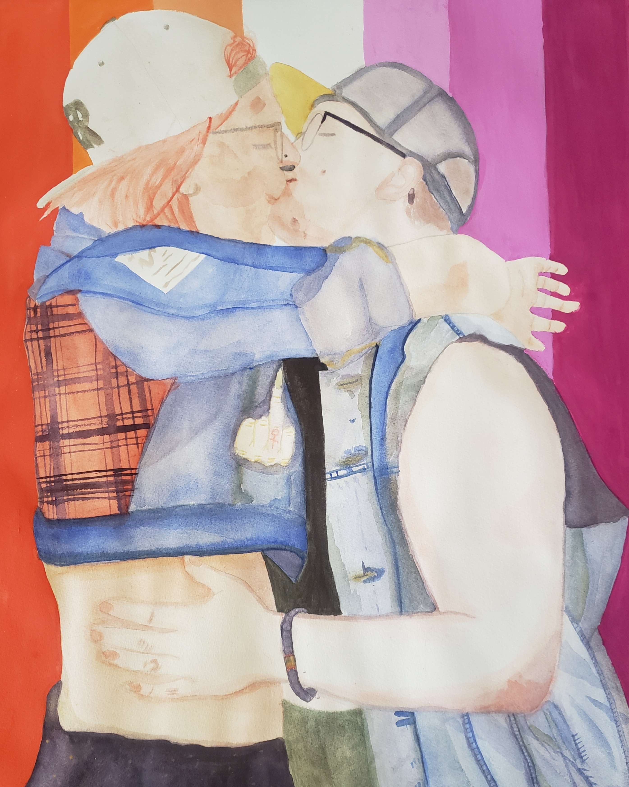

My work as an artist, activist, and academic reflects|refracts my experiences as a white neuroqueer trans woman and dyke. It exists at the intersection of queer and trans theory, history, and practice; community-engaged direct action; and art making as both a form of self- and community-care, and as a means to document and archive people, actions, movements, and joy. Through all my work I strive first and foremost to document—with an aspiration towards archiving—my experiences, my body, my lovers, and my community.
My practice is deeply political; and the academic, activist, and artistic practices I undertake are inseparable from, and inform one another. In everything I do, I strive to embody and forward an ethics of trans liberation, which is more important than ever in the time and place that I practice. Through my work, and like écrituré feminine, I (j/e) create spaces, with love—and with loving force when necessary—for trans women, their bodies, sexualities, and experiences to exist unapologetically. This has taken the form of eating fire at a protest against Bill 137 - The Education (Parents’ Bill of Rights) Amendment Act, 2023, narrating pornography in academic writing, a monumental re-construction of my genitals in the videogame Minecraft, interviews and Super-8 films about love and care co-created with my partners, and softening intense activist moments and movements through the medium of watercolour painting.
CEASEFIRE NOW! (Unfinished Work) (2024)
Watercolor and Guache on Cotton Paper
30" x 22"
Show Up! Fight Back! (2023)
Watercolor and Guache on Cotton Paper
22" x 30"
Pride is a Protest (2023)
Watercolor and Guache on Cotton Paper
22" x 30"
Butch (2023)
Aquarelle Graphite on Cotton Paper
22" x 30"

Dykes (2023)
Watercolor and Guache on Cotton Paper
22" x 30"
witchknife is cat haines's ongoing solo tran(s)cey drone project. witchknife's drones are improvised rituals that conjure ethereal feedback into beautiful sounds to heal your heart. witchknife has toured across the Canadian Prairies, been installed in the Dunlop Art Gallery's Digital Media Lounge, and is featured in Bella Vendetta's art porn Forced Earth Connection.
You can listen to witchknife on Bandcamp!
Caffenol-C Recipe
Ingredients:
- 0.5L Boiling Water
- 120g Instant Coffee
- 2.5L Cold Water
- 162g Washing Soda
- 48g Vitamin C
Directions:
- Combine 0.5L Boiling Water to 120g Instant Coffee and mix well.
- Add 2.5L Cold Water.
- Add 162g Washing Soda and mix well.
- Add 48g Vitamin C and mix well.
Kodak Tri-X 7266 Usage:
- Develop for 20 Minutes at room temperature.
Hot Girl Developer Recipe
A Theoretical Recipe by Cat C. Haines
Ingredients:
- 4.68g Estradiol
- isopropyl
- 1L Water
- 54g Washing Soda
- 16g Vitamin C
Directions:
- Combine Isopropyl to Estradiol until disolved.
- Add Water.
- Add Washing Soda and mix well.
- Add Vitamin C and mix well.
Kodak Tri-X 7266 Usage:
- Develop for 20 Minutes at room temperature.
Super Creepenol Developer Recipe (In Progress)
A Super Concentrated Creeping Bellflower Recipe With No Added Vitamin C.
Ingredients (Makes 3L):
- 3kg Creeping Bellflower Stalks, Flowers, and Leaves
- Water
- 162g Washing Soda
Directions:
- Separate flowers and leaves from stems
- Blend leaves and flowers with water
- Add chopped stems to mixture
- Bring to a boil
- Steep in the sun for 2 hrs
- Strain, bring back to a boil and reduce to 3L
- Let cool, then add 162g washing soda
The recipe should result in about 10g/L (62.5% Caffenol-C Recipe) of Vitamin C from the plant matter.
Kodak Tri-X 7266 Usage:
- Develop for 10 minutes at 30C.
Results
Original Eko-Bleach Recipe by Elian Mikkola
Kit:
Ingredients:
- 700ml Water
- 220ml 35% Hydrogen Peroxide
- 40ml Filtered Lemon Juide
- 40ml Filtered Vingear
Directions:
- Put on your mask and gloves.
- Combine Ingredients in order.
Salt Bath
Ingredients:
Directions
- Combine salt and water at boil until all salt is absorbed.
- Cool to room temperature.
Usage:
- Fix film in total darkness for 2-3 days.
Processing Kodak 7266 BW Reversal Film to Negative
Kit:
Process (in total darkness):
- 20 Minutes - Caffenol-C
- 10 Minutes - Water Bath
- 2-3 Days - Salt Bath
- 10 Minutes - Water Bath
Hang to dry for 8 hours.
Results (Digitally Inverted)
Processing Kodak 7266 BW Reversal Film to Positive
Kit:
Prep:
- Heat Eko-Bleach to 50c (it will cool to approx 40c in 22 minutes)
Process (in total darkness):
- 20 Minutes - Caffenol
- 2 Minutes - Water Bath #1
- 5 Minutes - Eco Bleach @ 40c
- 2.5 Seconds - Re-expose to light (@340 Lumens)
- 2 Minutes - Water Bath #2
- 11 Minutes - Caffenol
- 1 Minute - Water Bath #1
- 2-3 Days - Salt Bath to Fix
- 10 Minute - Water Bath #1
Hang to dry for 8 hours.
Results (NOTE: Includes Direct Animation over image)
Processing Kodachrome KA II (Failure/In Progress)
Kit:
Process (in total darkness):
- 3 Minutes - Caffenol-C/Super Creepenol
- 2 Minutes - Water Bath
- 2-3 Days - Salt Bath
- 2 Minutes - Water Bath
Hang to dry for 8 hours.
I couldn't get a usable image off this. I tried strips developed in Caffenol-C and Super Creepenol with development times ranging from 1:30 min, to 5 minutes. Around 2:30 - 3:00 yielded the strongest image, but it wasn't something that showed up in the scan. At 5 minutes, there was no image and the film was yellowish clear.
I think the film was underexposed, and it sounds like Kodachrome KA II film needs a LOT of light to get anything.
Someone talked about Caffenol-C x2, which was double concentrated, and that maybe working with an approx. 3min development time, so that might be the next experiment.

(g)Ender Gallery is a digital art installation set in Minecraft, and produced as part of the 2021 Ender Gallery Residency program at the MacKenzie Art Gallery on Treaty 4 Territory in Regina, SK.
(g)Ender Gallery consists of a monumental re-creation of my surgically-transitioned genitals, and while the installation is largely set within my body, it does not centre the body in expected ways. Instead, a museum filled with queer and trans moments from my lifetime takes up the space inside the monumental vagina.
(g)Ender Gallery was meant to engage and challenge trans communities, and included a series of public talks and a dance party set inside the vagina which are archived below.
(g)Ender Gallery also included a Minecraft resource pack which renamed and reskinned Minecraft blocks to include names and textures drawn from my own body.
Download (g)Ender Gallery Resource Pack
Filmed as part of Regina's 2022 One Take Super 8 event, this collaboration between Cat Haines and Aspen Enzo looks at queer belonging and love.
Filmed of the course of a 2 day camping trip, this film attempts to unpack t4t butch and femme aesthetics and love by exploring how two lovers see one another through the lens of a Super 8 camera.

The Lesbian Body ⚧ (2020) is a short zine that seeks to trans-form Monique Wittig's classic lesbian text, The Lesbian Body (1973). Monique Wittig states that "the body of the text subsumes all the words of the female body," yet as a trans lesbian, I find my body excluded and abject within the context of this work. This zine seeks to rectify that abjection by adding and entering into conversation with the original cissexist text.
The text of this short zine is included below, or you can download the zine here.
Author’s Note (M.W.)
Le Corps Lesbian has lesbianism as its theme, that is, a theme which cannot even be described as taboo, for it has no real existence in the history of literature… The body of the text subsumes all the words of the female [sic] body. Le Corps Lesbian attempts to acheive the affirmation of its reality. The lists of names contribute to this activity. To recite one’s own body, to recite the body of the other, is to recite the words of which the book is made up. The fascination for writing the never previously written, and the fascination for the unattained body proceed from the same desire. The desire to bring the real body violently to life in the words of the book (everything that is written exists), the desire to do violence by writing to the language which I [j/e] can enter only by force.
Author’s Note (C.H.)
The Lesbian Body ⚧ challenges Wittig’s assertion that the lesbian body is limited to the cisgender dyadic female body. This text enters into a conversation with The Lesbian Body that seeks to extend and trans-form the work through plagiarism and the act of (re-)writing the body (of the text). Le Corps Lesbian can be understood as a fundamentally trans- text despite its cisnormative understanding of the lesian body (it seeks to (re-)construct a ‘female’ body outside the existing binary). To understand it as a trans- text is the first step to subverting its cisnormative gaze upon the lesbian body. To plagiarize the text, as a trans lesbian, is to trans-form the text into something new and more radical, to open the possibilities of the text and further explore the lesbian body.
I am laid under an interdict in the city where you live. I have no right to go there. The women loose your dogs on m/e when I approach. Everything is denied m/e, even the right of asylum. I am overwhelmed by desperation when I hear your voice saying to m/e that I may not come, that they are determined to prevent m/e in every way… m/y cries m/y shrieks m/y ululations make your dogs shiver, they are at bay, I hear them whimpering… but whatever the impatience I provoke in them by m/y presence, they cannot prevent m/e from remaining here, they cannot compel m/e to move to a place where m/y voice would reach none of you.
I begin to sing as you sink your teeth into the flesh of m/y cock m/y most beautiful one, m/y most feared one. I feel your incisors slice into m/y glans, split m/y shaft in two, tearing the sponge like tissue. Your tongue explores m/y now barred corpus cavernosum travels up m/y urethra until it reaches m/y bladder. Left unsatisfied you begin to probe m/y seminal vesicle m/y prostate m/y vas deferens. As you explore each tube bodily fluids spill out of m/e and onto your hungry face and you moan in abject pleasure as m/y cum and blood and saliva begins to fill your lungs. Unable to breath you dig your face deeper into m/y body filling m/y scrotum and moving up into m/y stomach. I feel your face inside m/e biting at m/e transforming m/e.
Flowers begin to germinate around m/e m/y most adored one. They overtake m/y epidermis m/y dermis m/y hypodermis hair follicles bursting forth with now grown flowers. I feel their roots pushing into m/y pores forcing pearls of bacteria and sebum deeper into m/y body. Smells of blooming flowers mix with the rotting flesh of m/y body m/y decay m/y putrefaction. As I give birth to new life m/y most adored one, I call out in the direction of the city to ask if I am welcome.
THE LESBIAN BODY THE THYROID CARTILAGE THE LARYNX THE STUBBLE THE PREPUCE THE FRENULUM THE CORPUS SPONGIOSUM THE CORPUS CAVERNOSUM THE CORONA THE ADAM’S APPLE THE GLANS THE CLIT THE PUBIC SYMPHYSIS THE TESTIS THE SCROTUM THE SHAFT THE HAIR THE EPIDIDYMIS THE BLOOD THE ERECTIONS THE SPERMATIC CORD THE EJACULATORY DUCT THE BULBOSPONGIOSUS MUSCLE THE PROSTATE THE SEMINAL VESICLES THE BULBOURETHRAL GLANDS THE VAS DEFERENS THE EJACULATE THE SEMEN THE SPERMATOZOA THE SMEGMA THE TESTOSTERONE THE PROSTATIC SECRETIONS

This zine, the first in a series, seeks to specifically unpack the ways in which the medical-industrial complex can control, steal, and ultimately destroy trans people’s bodies, body image, and comfortable embodiments.
This zine is deeply personal and draws on my experiences and beliefs. By no means does it represent the best medical advice; in fact, it seeks to provide information beyond the context of “medicine” and considers the cultural and personal implications of how language is used and how our bodies are constructed and deconstructed through social and medical power.
This project was made possible with the support of SK Arts.
You can purchase a physical copy of this zine from Gravitron or you can download the zine for free here.
{kind=link}
{kind=link}
{kind=link}
{kind=link}
{kind=link}